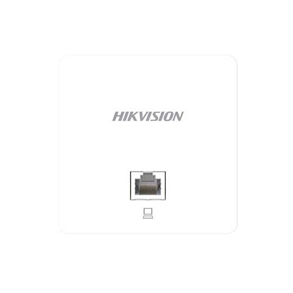

DS‑3WAP521‑SI
Wi‑Fi 5 · wall, concealed mount
WI‑FI 5

Speed
1167 Mbps
Ports
2× GbE
Clients
50+ rec.
Best for: dormitories, hotel rooms, hospital wards — anywhere you need a concealed access point instead of an outlet, with no chasing or surface boxes.
Full specifications
Bands2.4 GHz: 3002.4G
5 GHz: 8675G
5 GHz: 8675G
Streams2×2 MU‑MIMO / band
Ports1× GbE PoE‑in + 1× GbE LAN
Power802.3af/at PoE, up to 8 W
Clients / SSIDup to 128 / 8 SSID
Operating temp.0…+40 °C
Dimensions86×86×35 mm, 0.2 kg
ManagementWeb / centralized via AC controller
About this model
In the box
AP unit, mounting bracket for an 86 mm back‑box, screws. Confirm against the QSG packing list.
Ports & buttons
Rear: 1× GbE PoE‑in (the uplink, to your switch). Front: 1× GbE LAN for one wired device in the room. RESET pinhole.
Power
802.3af/at PoE only, up to 8 W. No DC input — you need a PoE switch or a PoE injector on the run.
Mounting
Replaces a wall data outlet: fits a standard 86 mm back‑box, faceplate sits flush.
Watch‑out: the front LAN port is a pass‑through for a single device (desk phone, IPTV box), not a second uplink, and it shares the AP's PoE budget.
Install this model →